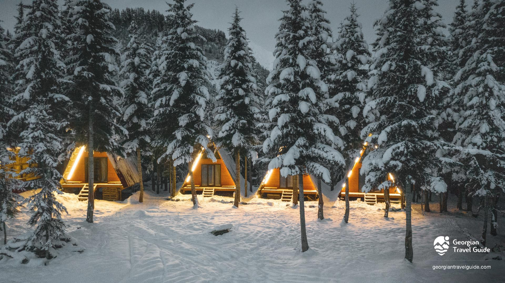
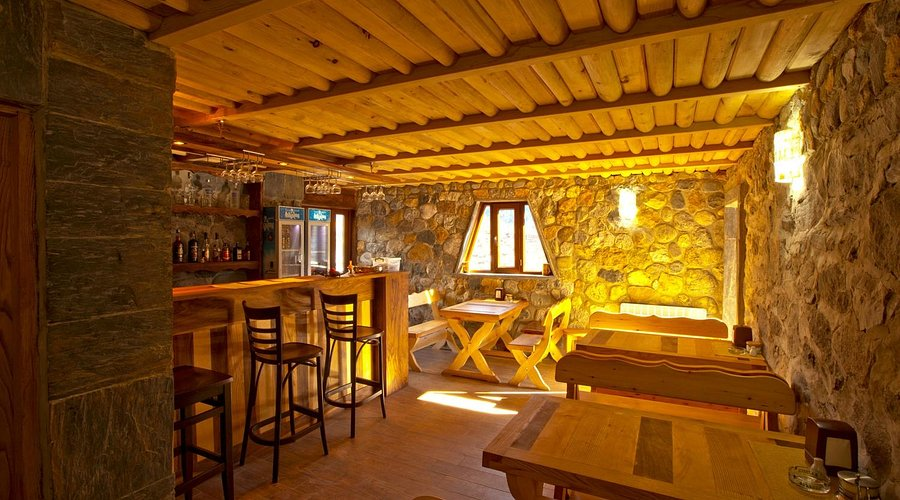
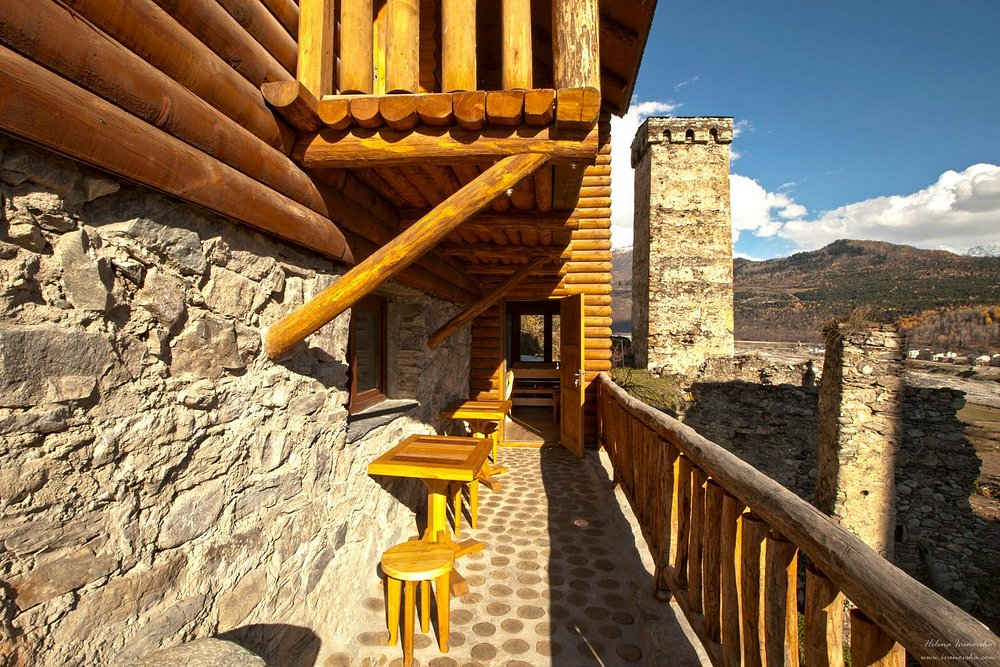
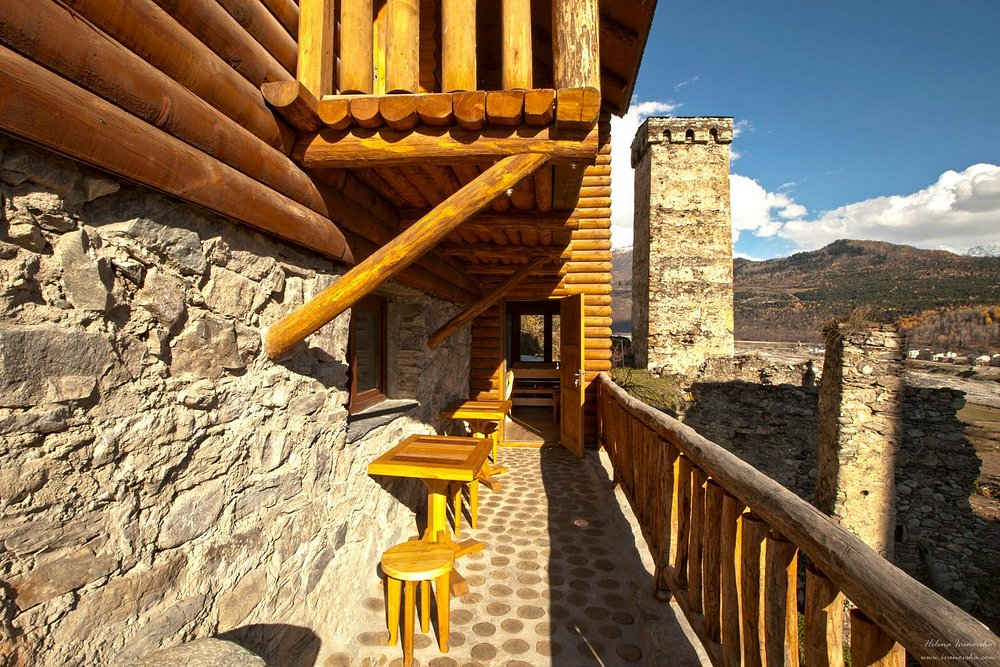

About Svaneti
Svaneti is a mountainous region in the Caucasus, known for its medieval defensive towers, unique villages, rich history, and breathtaking nature. It is a place where traditions are still alive today.
Photo Gallery


Places to Visit
Ushguli
One of the highest settlements in Europe. A UNESCO World Heritage Site.

Mestia
The main town of Svaneti. Mestia’s towers and museum are must–see attractions.

Shkhara
The highest mountain in Georgia. Stunning views and beautiful hiking trails.

Hotels & Restaurants
Bude – Cottage in Svaneti (Mestia)
Bude offers beautiful cottages in Mestia, where you can relax in stunning surroundings all year round. The cottages are located 3 km from the center of Mestia, near the lower cable car of Hatsvali, in a quiet forest area with amazing views and a cozy atmosphere. In total, Bude has 10 cottages suitable for visitors of all ages.


The Old House Cafe – Mestia
Located on the edge of the town in an elevated area. It features a wonderful south–facing sunny terrace. The hotel combines traditional Svan architecture with modern elements, providing high–level relaxation. The staff is friendly and attentive, and special praise goes to the pleasant and highly professional Anastasia.
 
